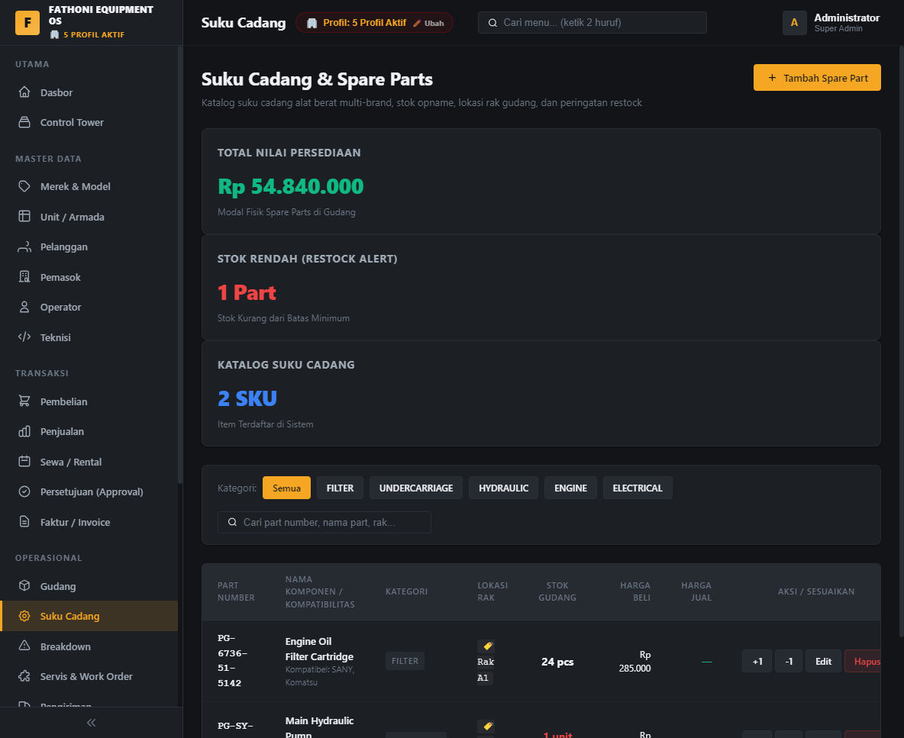
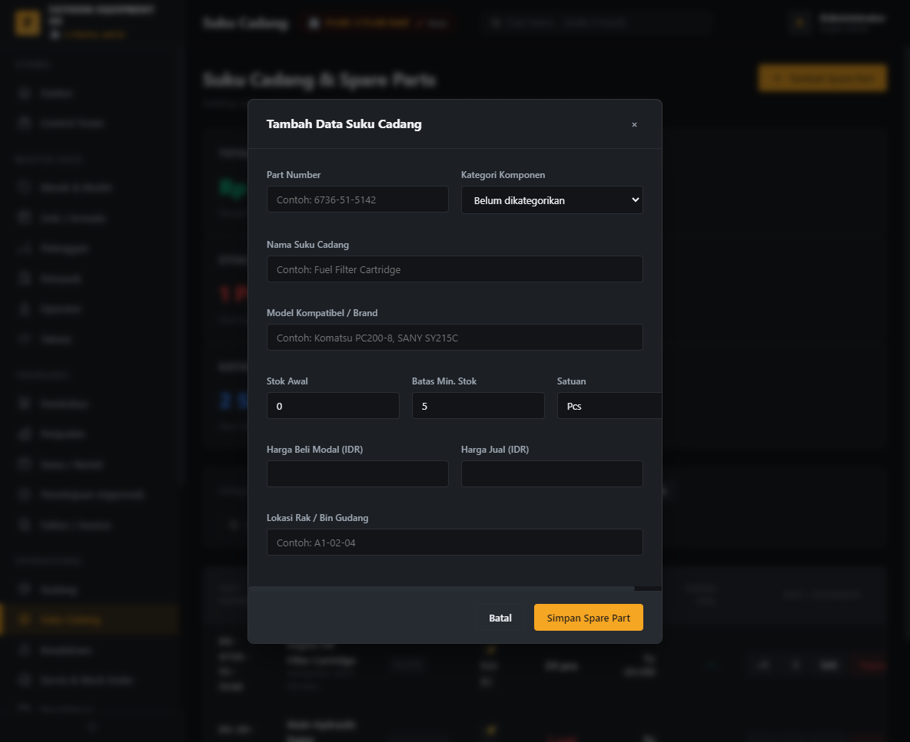

| Kelompok sidebar | Operasional |
| Alamat | #/spareparts (klik menu Suku Cadang di sidebar) |
| Peran yang melihat | Super Admin, Gudang, Teknisi |
| Mode bisnis | menu ini tampil bila salah satu profil bisnis aktif: Dealer / Distributor, Bengkel / Workshop, Kontraktor |
| Layar dipotret | 1 |
| Form dipotret | Tambah Data Suku Cadang |
Katalog part: part number, kategori, kompatibilitas model, stok, batas minimum, harga beli dan harga jual.

Judul di layar: Suku Cadang & Spare Parts
Subjudul: Katalog suku cadang alat berat multi-brand, stok opname, lokasi rak gudang, dan peringatan restock
Kartu ringkasan di bagian atas (angka di gambar dari data contoh):
Kolom tabel (2 baris terlihat pada potret):
| No. | Nama kolom persis di layar |
|---|---|
| 1 | PART NUMBER |
| 2 | NAMA KOMPONEN / KOMPATIBILITAS |
| 3 | KATEGORI |
| 4 | LOKASI RAK |
| 5 | STOK GUDANG |
| 6 | HARGA BELI |
| 7 | HARGA JUAL |
| 8 | AKSI / SESUAIKAN |
Tombol yang ada di layar (tanpa tombol profil/akun di bilah atas):
ENGINE ELECTRICAL
Kolom yang ada di luar form (pencarian/pendaftar):
Urutan kolom, nama label, tanda wajib, dan isi bawaan di bawah ini dibaca dari layar yang dipotret, bukan dari kode sumber. Tanda * adalah kolom yang memang ditahan kosong oleh aplikasi.
Dibuka dengan menekan tombol Tambah Spare Part.

Lebar jendela 540 px. Seluruh kolom muat tanpa menggulir pada jendela tinggi 980 px; pada jendela yang lebih pendek bagian bawah tetap perlu digulir.
| Label di layar | Jenis kolom | Isi saat jendela baru dibuka | Pilihan dropdown / teks bantu |
|---|---|---|---|
| Part Number * | teks | Contoh: 6736-51-5142 | - |
| Kategori Komponen | dropdown (7 pilihan) | kosong | Belum dikategorikan; Filter & Saringan; Undercarriage (Track/Roller); Hydraulic Component; Engine & Transmission; Electrical & Starter; Bucket, Teeth & Breaker |
| Nama Suku Cadang * | teks | Contoh: Fuel Filter Cartridge | - |
| Model Kompatibel / Brand | teks | Contoh: Komatsu PC200-8, SANY SY215C | - |
| Stok Awal | angka | 0 | - |
| Batas Min. Stok | angka | 5 | - |
| Satuan | teks | Pcs | - |
| Harga Beli Modal (IDR) | angka | kosong | - |
| Harga Jual (IDR) | angka | kosong | - |
| Lokasi Rak / Bin Gudang | teks | Contoh: A1-02-04 | - |
Wajib diisi: Part Number, Nama Suku Cadang
Tombol di kaki jendela: Batal · Simpan Spare Part